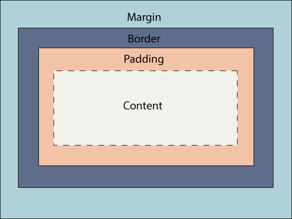

Structure, Phrasing and Display
The display property defines how an elemnt is displayed. Two of the many categories are: Structural (Block) and Phrasing (Inline). Block elements and inline elements are different in terms of the space that they take up. Block elements start on a new line and take up the entire width of the browser page whereas the inline elements don't start on a new line and only take up the amount of width that is necessary.
Box Model
The strucutre of HTML elements can be considered as boxes and this results in the box model for CSS when we start looking at the document structures in terms of design and layout. It usually has content, padding, border and margin. These elements are extremely useful for the layout of the structure but also vital when setting the height andt he width of an element.

Background Images
Image tag and background images are different in their usage. Image tags should be used when they are content related whereas background images are used as design choices. Search engines also don't usually index background images automatically which is why we should use iamge tags to be recognized by screen readers which again relates back to if the image is content related or a design choice.